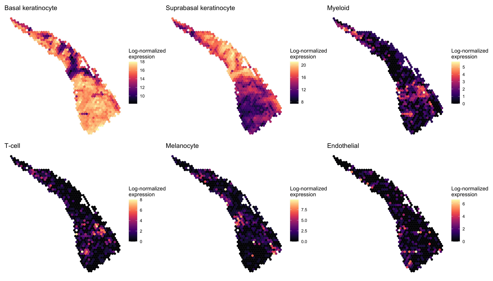
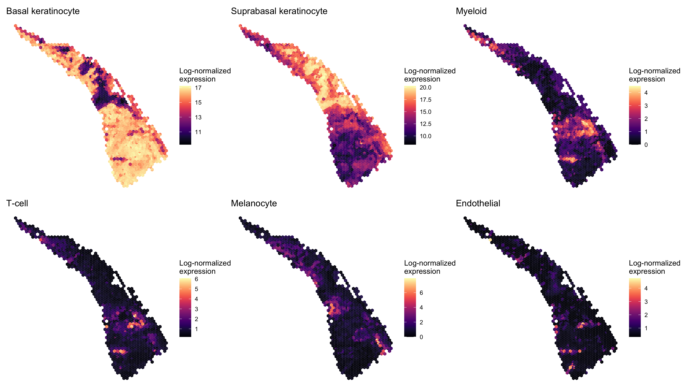
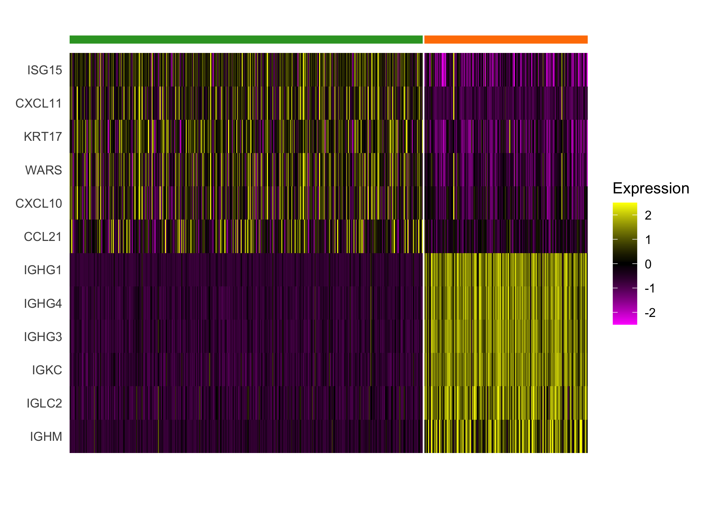

BayesSpace analysis of SCC dataset (Ji et al., 2020)
Edward Zhao, Matt Stone, Xing Ren, and Raphael Gottardo
Source:vignettes/ji_SCC.Rmd
ji_SCC.RmdOverview
Here we present our re-analysis of one of the squamous cell carcinoma (SCC) samples originally reported by Ji et al. (2020). These data were obtained from GEO (accession GSE144239); we re-analyze the sample from patient 4, which had greater sequencing depth than the sample from patient 6.
Processing the data
A cleaned SingleCellExperiment object containing the dataset is available through BayesSpace (details on data cleaning are available on Github). We preprocessed the data by performing PCA on the top 2,000 HVGs.
scc <- getRDS("2020_ji_squamous-cell-carcinoma", "P4_rep1")
set.seed(101)
dec <- scran::modelGeneVar(scc)
top <- scran::getTopHVGs(dec, n = 2000)
set.seed(102)
scc <- scater::runPCA(scc, subset_row=top)
## Add BayesSpace metadata
scc <- spatialPreprocess(scc, platform="Visium", skip.PCA=TRUE)Clustering with BayesSpace
Unlike our analyses of the melanoma (Thrane et al. 2018) and dorsolateral prefrontal cortex (Maynard, Collado-Torres, et al. 2020) samples, this sample did not have a strong biological prior for the expected number of clusters. After evaluating the average model pseudo-log-likelihood over the first 1000 iterations (excluding a 100-iteration burn-in), we selected q=12 as a reasonable elbow and choice of number of clusters.

We clustered the first 15 principal components, specifying 12 clusters as described above, and ran the MCMC algorithm for 10,000 iterations. We set our smoothing parameter gamma to 3, which we generally suggest for Visium datasets. We also computed an enhanced resolution clustering using the same parameters and 200,000 iterations.
q <- 12 # Number of clusters
d <- 15 # Number of PCs
## Here we run mclust externally so the random seeding is consistent with
## original analyses
library(mclust)
Y <- reducedDim(scc, "PCA")[, seq_len(d)]
set.seed(101)
init <- Mclust(Y, q, "EEE", verbose=FALSE)$classification
## Run BayesSpace clustering
set.seed(100)
scc <- spatialCluster(scc, q=q, d=d, platform='Visium', init=init,
nrep=10000, gamma=3)
## Run BayesSpace enhanced clustering
set.seed(100)
scc.enhanced <- spatialEnhance(scc, q=q, d=d, platform="Visium",
nrep=200000, gamma=3, verbose=TRUE,
jitter_scale=5.5, jitter_prior=0.3,
save.chain=TRUE)We compared the two clusterings using clusterPlot().
palette <- RColorBrewer::brewer.pal(q, "Paired")
spot.plot <- clusterPlot(scc, palette=palette, size=0.05) +
labs(title="Spot-level clustering") +
guides(fill=FALSE)
enhanced.plot <- clusterPlot(scc.enhanced, palette=palette, size=0.05) +
labs(title="Enhanced clustering")
spot.plot + enhanced.plot
Enhancing feature expression
Next we examined the expression of cell-type-specific marker genes reported by Ji et al. at the spot level and after enhancement. We predicted the marker gene at enhanced subspot resolution using xgboost, tuning the selection of the nrounds parameter with two thirds of the spots. (See documentation of enhanceFeatures() for details.)
markers <- list()
markers[["Basal keratinocyte"]] <- c("KRT5", "KRT14")
markers[["Suprabasal keratinocyte"]] <- c("KRT1", "KRT10")
markers[["Myeloid"]] <- c("LYZ")
markers[["T-cell"]] <- c("CD2", "CD3D", "CD3E", "CD3G", "CD7")
markers[["Melanocyte"]] <- c("MLANA", "DCT", "PMEL")
markers[["Endothelial"]] <- c("TFF3", "CLDN5", "VWF")
scc.enhanced <- enhanceFeatures(scc.enhanced, scc,
model="xgboost",
feature_names=purrr::reduce(markers, c),
nrounds=0)We aggregated the expression of marker genes within each cell type by summing their log-normalized expression.
sum_counts <- function(sce, features) {
if (length(features) > 1) {
colSums(logcounts(sce)[features, ])
} else {
logcounts(sce)[features, ]
}
}
spot_expr <- purrr::map(markers, function(xs) sum_counts(scc, xs))
enhanced_expr <- purrr::map(markers, function(xs) sum_counts(scc.enhanced, xs))And we plotted the spatial expression of each cell type’s markers using featurePlot(), at the spot-level:
plot_expression <- function(sce, expr, name) {
featurePlot(sce, expr, color=NA) +
viridis::scale_fill_viridis(option="A") +
labs(title=name, fill="Log-normalized\nexpression")
}
spot_plots <- purrr::imap(spot_expr, function(x, y) plot_expression(scc, x, y))
patchwork::wrap_plots(spot_plots, ncol=3)
And at enhanced subspot resolution:
enhanced_plots <- purrr::imap(enhanced_expr, function(x, y) plot_expression(scc.enhanced, x, y))
patchwork::wrap_plots(enhanced_plots, ncol=3)
Differential expression analysis
Finally, we performed a differential expression analysis between clusters of interest. We limited our analysis to the top 2,000 highly variable genes, and we first imputed the expression of these HVGs at enhanced resolution.
## Using the same 2,000 HVGs previously computed for PCA
scc.enhanced <- enhanceFeatures(scc.enhanced, scc,
model="xgboost",
feature_names=top,
nrounds=0)Next, we applied a standard Seurat differential expression analysis workflow to the enhanced resolution.
library(dplyr)
seurat_cluster_DE <- function(sce, clusters=NULL, n_markers=6) {
## Convert SCE to seurat object and use BayesSpace cluster as identifier
seurat <- Seurat::CreateSeuratObject(counts=logcounts(sce),
assay='Spatial',
meta.data=as.data.frame(colData(sce)))
seurat <- Seurat::SetIdent(seurat, value = "spatial.cluster")
## Subset to specified clusters
if (!is.null(clusters)) {
seurat <- subset(seurat, spatial.cluster %in% clusters)
palette <- palette[clusters]
}
## Scale data
seurat@assays$Spatial@scale.data <-
seurat@assays$Spatial@data %>% as.matrix %>% t %>% scale %>% t
## Select top n markers from each cluster (by log fold change)
top_markers <- Seurat::FindAllMarkers(seurat, assay='Spatial', slot='data',
group.by='spatial.cluster',
logfc.threshold=1, only.pos=TRUE) %>%
group_by(cluster) %>%
top_n(n_markers, avg_logFC)
## Plot expression of markers
Seurat::DoHeatmap(seurat, features = top_markers$gene, slot='scale.data',
group.by = "spatial.cluster", group.colors=palette,
angle=0, size=4, label = FALSE, raster=FALSE) +
guides(col = FALSE)
}We highlight the different expression between clusters 4 and 8, which both demonstrate enriched immune cell expression but display substantial differences in expression of immunoglobulin genes and genes regulated by interferons.
seurat_cluster_DE(scc.enhanced, c(4, 8))
We additionally highlight the heterogeneity within the tumor revealed by differential expression of the tumor clusters.
seurat_cluster_DE(scc.enhanced, c(2, 3, 6))